Aroma Roast
En Meta-kampanj som skulle få gravida att upptäcka koffeinfritt kaffe, så att kaffestunden inte behöver försvinna under graviditeten.
Mitt bidrag
- Research om gravidas painpoints
- Annonser för Meta
- Fotografering
- Uppsättning i Meta Ads Manager
Steg 1
Awareness: väck igenkänning

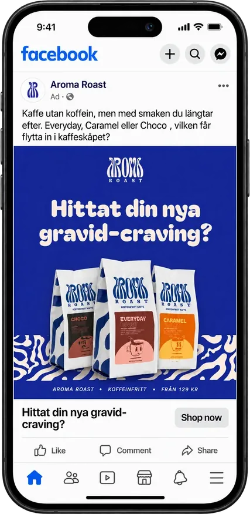
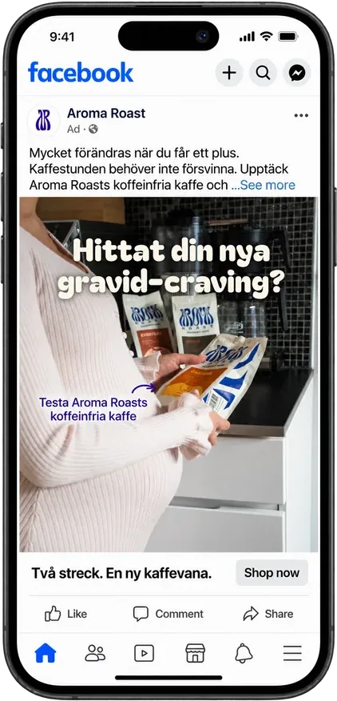
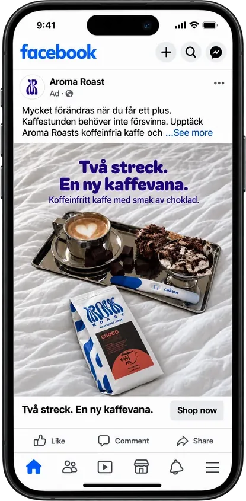
Steg 2
Consideration: behåll kaffestunden
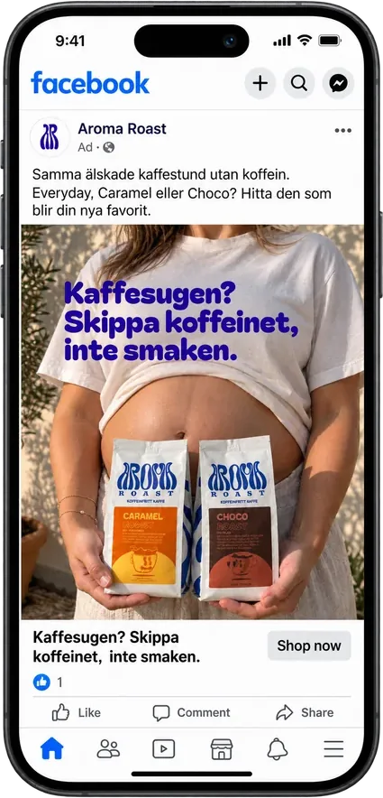
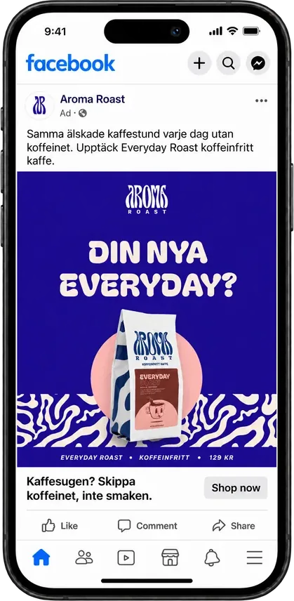
Steg 3
Conversion: gör det lätt att köpa
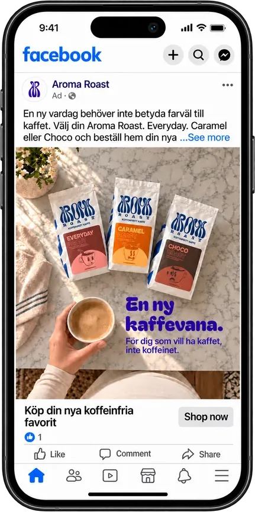
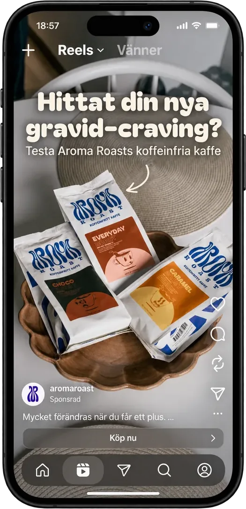
Fotograferingen
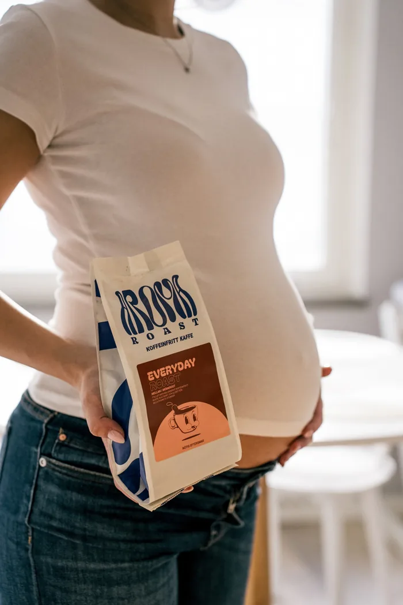
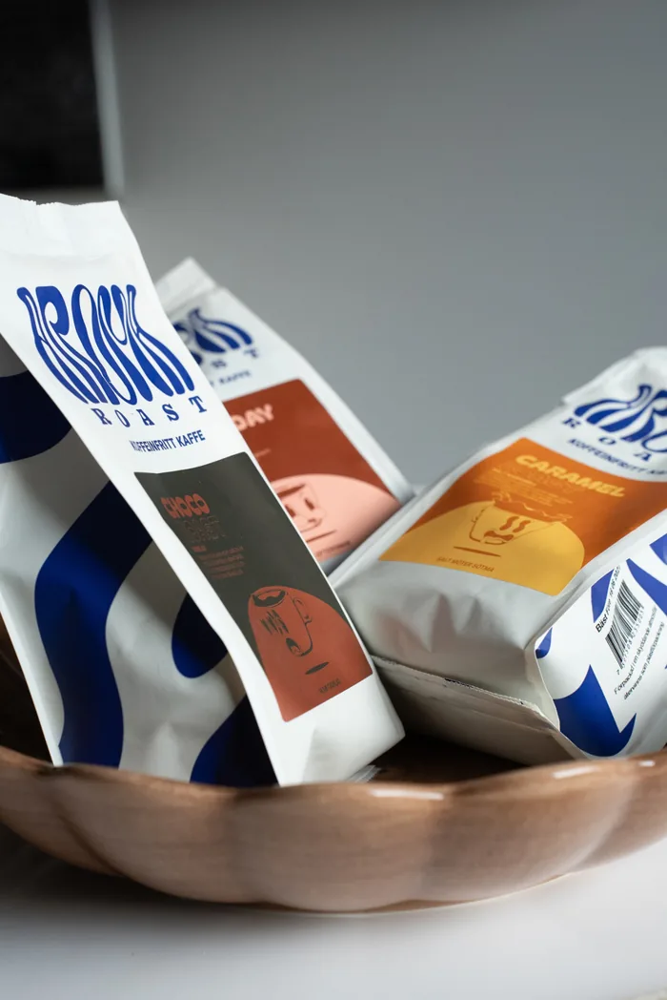
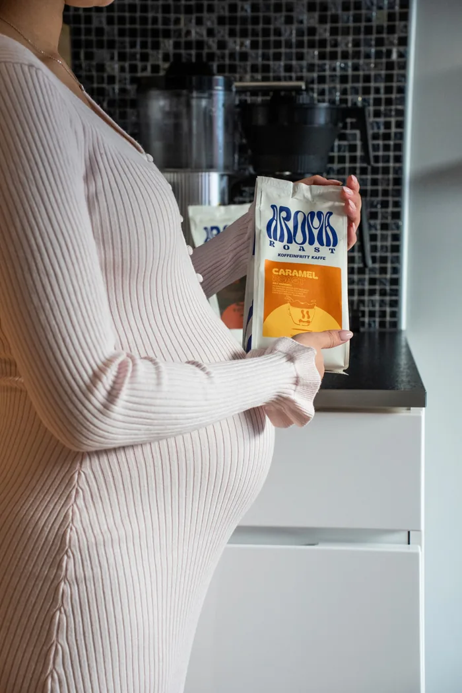
Resultat
- Nådda personer
- 8 937
- Klickfrekvens (CTR)
- 1,30 %
- Köp på webbplatsen
- 7
- ROAS, bästa annonsen
- 5,21
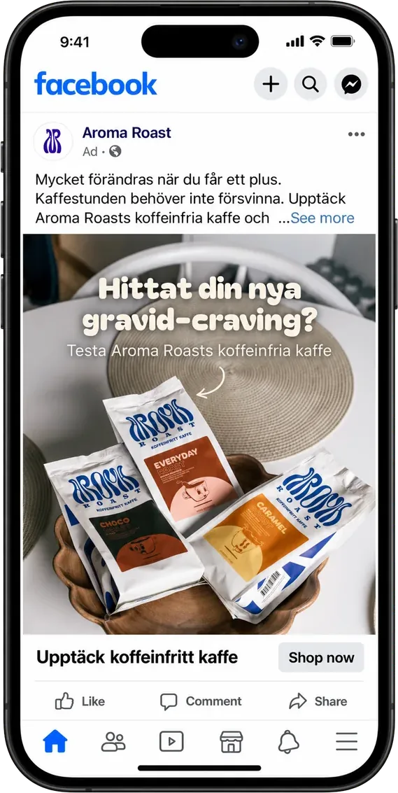
Bästa annonsen kombinerade produktbild med gravid-hooken. Den gav ett köp för 34,18 kr i annonskostnad och en ROAS på 5,21.
Reflektion
Kampanjen testades under cirka en vecka, vilket gav ett begränsat
dataunderlag. Resultaten bör därför ses som tidiga indikationer snarare
än säkra slutsatser.
En längre testperiod hade gett bättre förutsättningar att utvärdera
annonserna och optimera kampanjen.